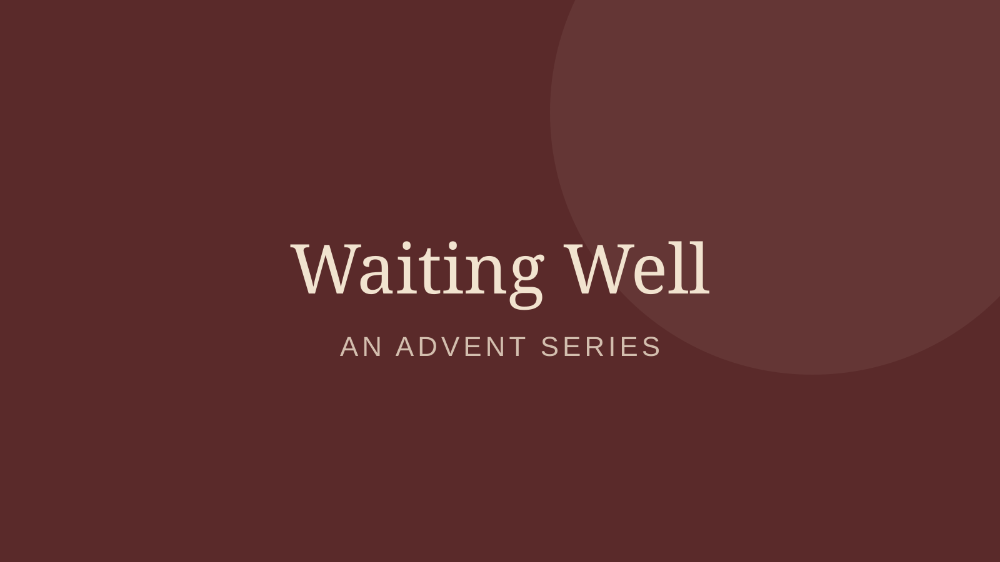

Good Shepherd Baptist Church
Sermons on the church website
All sermons
Series
Rooted
5 sermons · Oct – Nov 2026
Psalms for the Road
3 sermons · Oct – Nov 2026

Waiting Well
4 sermons · Dec 2025
Listen in the Good Shepherd app